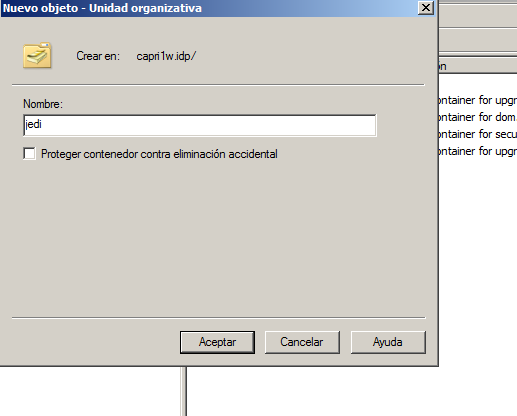

- Módulo: Sistemas Operativos
- Título del trabajo PDC Politicas o directivas grupo
- Componentes del grupo: Beatriz de Armas Salvador
- Curso Académico: 2013/2014
- Fecha de entrega: 16 de Junio de 2014
1. Políticas o directivas de grupo
- Leer/consultar la documentación que se proporciona. Concretamente el fichero M34_directivas_grupos.pdf (Se puede descargar desde "Documentación/Win2008Server").
- Trabajo individual con entrega en plantilla HTML, vía repositorio GITHUB.
2. Objetivo
- Establecer unas directivas para la OU "jedi", y otras diferentes para la OU "sith".

- Después vamos a "Administración de Grupos", seleccionamos "Domain Controllers" y con el botón derecho "Bloqueamos la herencia".
- Seguidamente, vamos a crear un grupo de directivas para Jedi y Sith.
3. Administrar las políticas de grupo
Para editar configuraciones de Directiva de grupo:
- En Group Policy Management (Administración de directivas de grupo), en el árbol de consola, desplegar Group Policy Objects (Objetos de Directiva de grupo). Click con el botón derecho del ratón en el GPO y seleccionar Edit (Editar).
- En el Editor de objetos de Directiva de grupo, buscar la Directiva de grupo que queremos modificar y hacemos doble clic. En el cuadro de diálogo Propiedades, cambiamos la configuración y Aceptar.
4. Ejemplos de directivas
Quitar el menú Ejecutar del menú Inicio
- Ubicación: Configuración de usuario / Plantillas administrativas / Menú Inicio y barra de tareas (User configuration / Administrative Templates / Start Menu and Taskbar)
- Configuración de Directiva de grupo: Quitar el menú Ejecutar del menú Inicio (Remove Run menu from Start Menu)
- Opción Habilitada
Prohibir el acceso al Panel de control
- Ubicación: Configuración de usuario / Plantillas administrativas / Panel de control (User configuration / Administrative Templates / Control Panel)
- Configuración de Directiva de grupo: Prohibir el acceso al Panel de control (Prohibit access to the Control Panel)
- Opción Habilitada

Quitar el icono Mis sitios de red del menú inicio
- Ubicación: Configuración de usuario / Plantillas administrativas / Menú Inicio y barra de tareas (User configuration / Administrative Templates / Start Menu and Taskbar)
- Configuración de Directiva de grupo: Quitar el icono Mis sitios de red del men ú Inicio (Remove My Network Places icon from Start Menu)
- Opción Habilitada
Quitar Conexiones de red del menú Inicio
- Ubicación: Configuración de usuario / Plantillas administrativas / Menú Inicio y barra de tareas (User configuration / Administra tive Templates / Start Menu and Taskbar)
- Configuración de Directiva de grupo: Quitar Conexiones de red del menú Inicio (Remove Network Connections from the Start Menu)
- Opción Habilitada
Ocultar unidades específicas en Mi PC
- Ubicación: Configurac ión de usuario / Plantillas administrativas / Componentes de Windows / Explorador de Windows (User configuration / Administrative Templates / Windows Components / Windows Explorer)
- Configuración de Directiva de grupo: Ocultar estas unidades específicas en Mi PC (Hide these specified drives in My Computer) o Impedir el acceso a las unidades desde Mi PC (Prevent Access to drives from my computer).
- Opción Habilitada. Elegir un combinación adecuada como bloquear las unidades A y B (Restrict A y B drives only).
Habilitar Quitar “Conectar a unidad de red” y “Desconectar de unidad de red”
- Ubicación: Configuración de usuario / Plantillas administrativas / Componentes de Windows / Explorador de Windows (User configuration / Administrative Templates / Windows Components / Windows Explorer)
- Configuración de Directiva de grupo: Quitar “Conectar a unidad de red” y “Desconectar de unidad de red” (Remove “Map Network Drive” and “Disconnect Network Drive”).
- Opción Habilitada
- Profe, que en las imagenes se ve como deshabilitado pero que en verdad habia puesto habilitado y para no estar realizando las nuevas capturas, lo deje asi.
5. Comprobación
- Aquí muestro el resultado de las directivas. Cuando entro con el usuario maul no se muestra el botón ejecutar y en cambio con yoda si, ya que esta directiva no pertenece a los jedi.